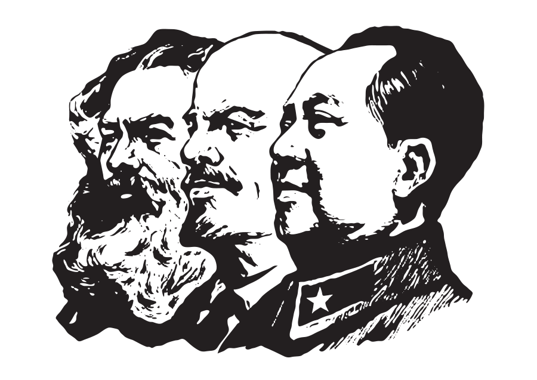

Does the Maoist Communist Union really know what is to be done?
September 16, 2026
Last week, the Maoist Communist Union (MCU), a pre-party organization based in New York City and headed by its chairman Ryan Costello, announced that it would be reviving its national online study series which it had initially ceased more than a year ago.
Read More →